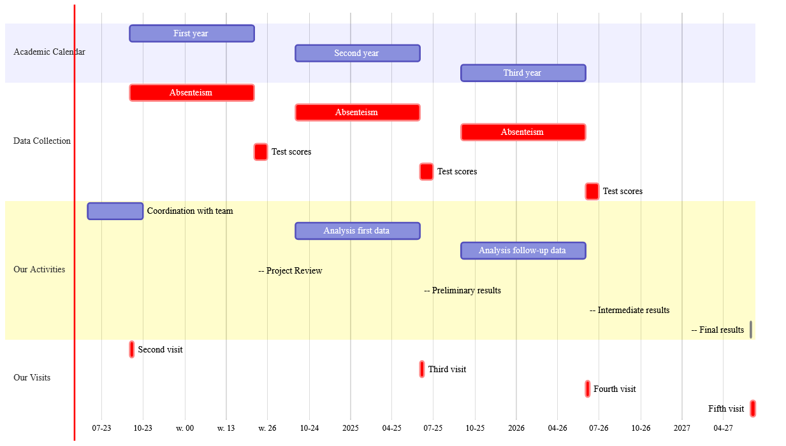

Jacopo Mazza
Utrecht University
May 8, 2023
Alex Eble, Associate Professor of Economics and Education at Columbia University.
Francesco Fasani, Associate Professor of Economics at University of Milan.
Jacopo Mazza, Assistant Professor of Economics at Utrecht University.
The program has three Specific Objectives addressing areas of:
Teachers training in various aspects:
Impact of a program is the comparison between:
Question:
Are non-treated schools a good comparison?
we cannot observe the “counterfactual”:
Solution…?

Collaboration with local universities in Malawi to enhance research quality and relevance
Involve CERT staff in various aspects of the research such as data collection, and dissemination
Provide capacity-building opportunities for CERT staff such as training workshops
What secondary data are available?
How were schools assigned to the program?
What data could be collected?
What would you want to know?